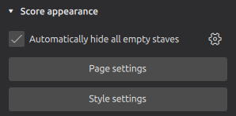
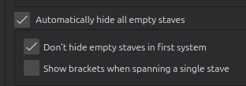
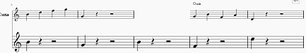

Showing staves only where needed
By default, a score will show all measures of all staves on all pages throughout the score, whether they are empty or not. However, you may wish to have certain staves appear only on systems where they are needed. You may even wish to have a staff appear or disappear mid-system. MuseScore Studio provides a number of controls for this purpose.
To hide a certain instrument or staff entirely throughout a score, see Hiding instruments and staves.
Hiding staves when they are empty for an entire system
A staff is considered 'empty' if there are no notes or other markings (with a few exceptions) on it for an entire system. It is a common practice in many printed ensemble and orchestral scores to hide these empty staves in order to save space:

Hiding all empty staves
To hide or unhide all empty staves in the current score automatically:
- Ensure that nothing in your score is selected (press Esc if necessary).
- Go to the Properties panel.
- Under Score appearance, check the box for Automatically hide all empty staves.

This same toggle is available in Format -> Style -> Score:

It is common, though not universal, to show all staves on the first system of a score even if they are hidden on subsequent ones (in this way, the first page will always show the complete instrumentation). If you wish to hide empty staves even on the first system, uncheck the Don't hide empty staves in first system toggle.
If Show brackets when spanning a single staff is unchecked, brackets and braces will be hidden when all but one the staves of a bracketed group are hidden on a system. Check this box if you want these brackets to remain visible.
Excluding specific staves from being hidden
The setting just described (Automatically hide all empty staves) applies to all staves in a score, but you can override this setting for specific instruments and/or staves using settings in the Layout panel (View -> Layout or toggle with F7).
Overriding all staves of an instrument
- Click the

- In the popup that appears, select an option for Hide empty staves: * Auto: follow the score-wide setting (this is the default option) * Always hide: the staves will always be hidden when empty (even if the score-wide setting is not turned on) * Never hide: the staves will never be hidden when empty (even if the score-wide setting is turned on)


The Always hide setting can be useful for temporary staves. For example:
- A cue staff which appears for a few bars
- A third stave for a keyboard part required for a specific passage (see also Ossia, below)
By default the staves will only be hidden if all the instruments' staves are empty on a system. This is useful where you have an instrument with multiple staves, such as a piano or harp, but you wish for all of its staves to be shown even if some of them are empty (for example, if only the right hand is playing on a given system). If you do want to allow individual staves to be hidden, uncheck Only hide staves on a system if the entire instrument is empty. Note that this option is only visible for instruments with multiple staves.
Override a specific staff within an instrument)
- Click the

- Click the
- In the popup that appears, select an option for Hide empty staves: * Follow instrument: Follow the instruments' setting (this is the default option). See Overriding all staves of an instrument, above. * Always hide: The staff will always be hidden when empty (even if the score-wide setting is not turned on). * Never hide: The staff will never be hidden when empty (even if the score-wide setting is turned on).


Choosing which staff to show when the entire system is empty
Where all staves of a system are empty, and stave hiding is turned on, the topmost staff will be shown by default. If you wish to choose another staff (or staves) to show in this situation:
- Ensure that the Layout panel is visible (View -> Layout or toggle with F7).
- Click the
- Click the
- In the popup that appears, check the box for If the entire system is empty, show this stave.
Note that this setting works independently of all the other settings described here, and only applies when the entire system is empty.
Hiding empty measures
Cutaway staves
There is a style used in some contemporary scores where individual measures are hidden when they are empty. These are sometimes called cutaway staves.

To use this style for a specific stave:
- Ensure that the Layout panel is visible (View -> Layout or toggle with F7).
- Click the
- Click the

Note that this hides the staff on a per-measure basis. Even if all measures on the system are empty, vertical space is still reserved for the staff, unless staff hiding is turned on, and the instrument label and brackets may still be shown. To prevent this from happening, it is a good idea to also set Hide empty staves to Always hide for cutaway staves.
Hiding specific measures
MuseScore Studio also allows you to make individual measures invisible on any given staff, whether empty or not.
To set a measure to be invisible on a given staff:
- Right-click the measure
- Select Measure properties
- In the dialog that appears, uncheck the Visible box for the staff or staves in which you wish the measure to be made invisible.
Ossia
An ossia is where a passage is notated on a small staff above or below the main staff to show an alternative (a different editorial reading, a realization of ornaments, a facilitation, etc.)

These can be created in MuseScore Studio using a combination of the features described above:
- Add a staff as described in Adding a staff to an existing instrument. You may need to move it to the correct position relative to the main stave, and adjust any brackets that are automatically created.
- Enter the desired notation on the new staff.
- Ensure that the Layout panel is visible (View -> Layout or toggle with F7).
- Click the
- Click the
- In the popup that appears, check the boxes for Small stave and Hide all bars that do not contain notation (cutaway).
If you wish to hear the ossia play back instead of the normal staff, select the corresponding measures on the normal staff and uncheck the Play box in the Properties panel. If you would rather hear the normal staff, do this for the ossia staff instead.
You might also want to hide the initial or final barline for the passage. To do this, select the barline and press V or uncheck the Visible box in the Properties panel.
You may also wish to decrease or fix the distance between the ossia and the normal staff. To do this, use a Staff spacer fixed down from the Layout palette.